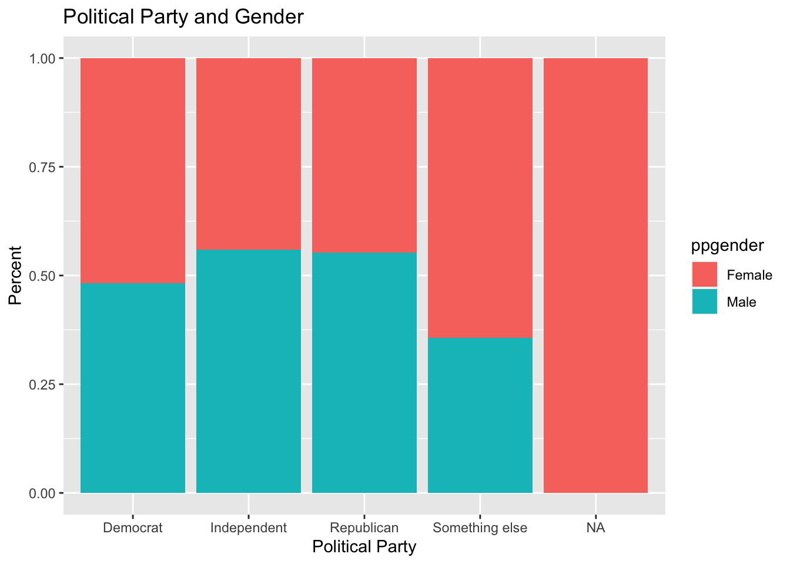
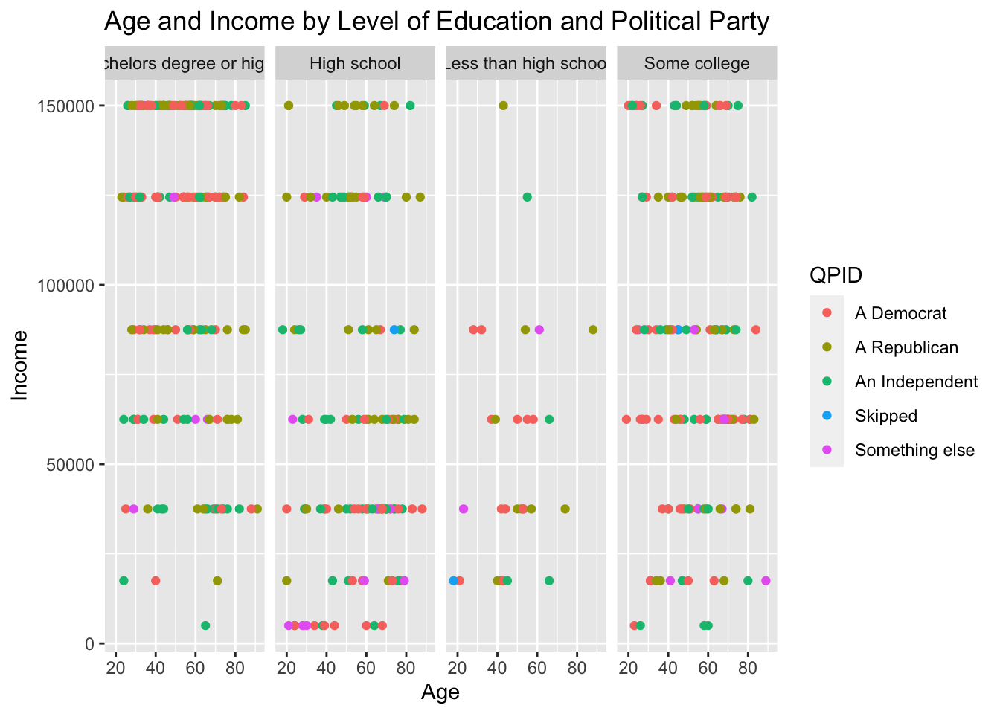
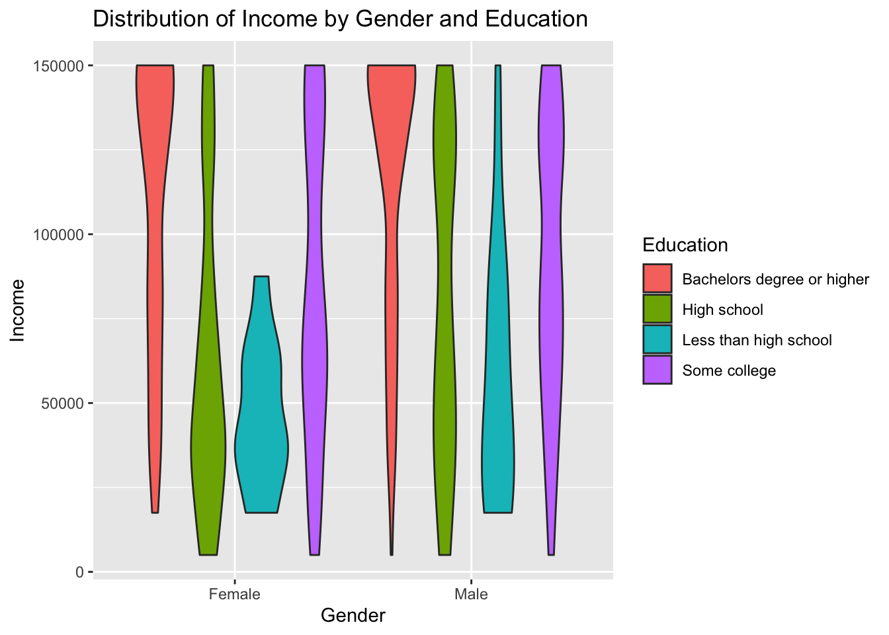

library(tidyverse)
library(ggplot2)
knitr::opts_chunk$set(echo = TRUE, warning=FALSE, message=FALSE)Challenge 7 Instructions
challenge_7
abc_poll
Visualizing Multiple Dimensions
Challenge Overview
Today’s challenge is to:
- read in a data set, and describe the data set using both words and any supporting information (e.g., tables, etc)
- tidy data (as needed, including sanity checks)
- mutate variables as needed (including sanity checks)
- Recreate at least two graphs from previous exercises, but introduce at least one additional dimension that you omitted before using ggplot functionality (color, shape, line, facet, etc) The goal is not to create unneeded chart ink (Tufte), but to concisely capture variation in additional dimensions that were collapsed in your earlier 2 or 3 dimensional graphs.
- Explain why you choose the specific graph type
- If you haven’t tried in previous weeks, work this week to make your graphs “publication” ready with titles, captions, and pretty axis labels and other viewer-friendly features
R Graph Gallery is a good starting point for thinking about what information is conveyed in standard graph types, and includes example R code. And anyone not familiar with Edward Tufte should check out his fantastic books and courses on data visualizaton.
(be sure to only include the category tags for the data you use!)
Read in data
- abc_poll ⭐⭐
library(readr)
abcpoll <- read.csv(file = "_data/abc_poll_2021.csv",
header=TRUE,
sep = ","
)
#abcpollBriefly describe the data
The data set is a 2021 ABC poll that include demographics such as age, education, employment, ethnicity, political opinions, and geographic area.
head(abcpoll) id xspanish complete_status ppage
1 7230001 English qualified 68
2 7230002 English qualified 85
3 7230003 English qualified 69
4 7230004 English qualified 74
5 7230005 English qualified 77
6 7230006 English qualified 70
ppeduc5
1 High school graduate (high school diploma or the equivalent GED)
2 Bachelor\x92s degree
3 High school graduate (high school diploma or the equivalent GED)
4 Bachelor\x92s degree
5 High school graduate (high school diploma or the equivalent GED)
6 Bachelor\x92s degree
ppeducat ppgender ppethm pphhsize
1 High school Female White, Non-Hispanic 2
2 Bachelors degree or higher Male White, Non-Hispanic 2
3 High school Male White, Non-Hispanic 2
4 Bachelors degree or higher Female White, Non-Hispanic 1
5 High school Male White, Non-Hispanic 3
6 Bachelors degree or higher Male White, Non-Hispanic 2
ppinc7 ppmarit5 ppmsacat ppreg4
1 $25,000 to $49,999 Now Married Metro area South
2 $150,000 or more Now Married Metro area South
3 $100,000 to $149,999 Now Married Metro area South
4 $25,000 to $49,999 Divorced Metro area NorthEast
5 $10,000 to $24,999 Now Married Metro area MidWest
6 $75,000 to $99,999 Now Married Metro area MidWest
pprent ppstaten
1 Owned or being bought by you or someone in your household Florida
2 Owned or being bought by you or someone in your household Kentucky
3 Owned or being bought by you or someone in your household Florida
4 Owned or being bought by you or someone in your household Pennsylvania
5 Owned or being bought by you or someone in your household Michigan
6 Owned or being bought by you or someone in your household Missouri
PPWORKA ppemploy Q1_a Q1_b
1 Retired Not working Approve Approve
2 Retired Not working Approve Approve
3 Retired Not working Disapprove Disapprove
4 Retired Not working Approve Approve
5 Retired Not working Approve Approve
6 Employed part-time (by someone else) Working part-time Approve Approve
Q1_c Q1_d Q1_e Q1_f Q2 Q3 Q4
1 Disapprove Approve Approve Disapprove Not so concerned Yes Good
2 Approve Approve Approve Approve Somewhat concerned Yes Good
3 Disapprove Disapprove Disapprove Approve Very concerned Yes Poor
4 Approve Approve Approve Approve Somewhat concerned Yes Excellent
5 Approve Approve Approve Approve Somewhat concerned Yes Excellent
6 Approve Approve Disapprove Approve Not so concerned Yes Excellent
Q5 QPID ABCAGE Contact
1 Optimistic A Democrat 65+ No, I am not willing to be interviewed
2 Optimistic An Independent 65+ No, I am not willing to be interviewed
3 Pessimistic Something else 65+ No, I am not willing to be interviewed
4 Pessimistic An Independent 65+ Yes, I am willing to be interviewed
5 Optimistic A Democrat 65+ No, I am not willing to be interviewed
6 Optimistic A Democrat 65+ No, I am not willing to be interviewed
weights_pid
1 0.6382
2 0.5493
3 0.8488
4 0.8126
5 0.4994
6 0.4043#view(abcpoll)
ncol(abcpoll)[1] 31nrow(abcpoll)[1] 527dim(abcpoll)[1] 527 31Tidy Data (as needed)
The income and household size variables were changed from character data to numerical data. Cell entries for household size 6 or more will be 6. Cell entries for income were changed to be the mean value for the income range, so $25000 to $49,999 was changed to $37,500.
abcpoll1<-as.data.frame.matrix(abcpoll)
abcpoll1$pphhsize[abcpoll1$pphhsize == '6 or more'] <- '6'
abcpoll1$ppinc7[abcpoll1$ppinc7 == '$10,000 to $24,999'] <- '17500'
abcpoll1$ppinc7[abcpoll1$ppinc7 == '$25,000 to $49,999'] <- '37500'
abcpoll1$ppinc7[abcpoll1$ppinc7 == '$150,000 or more'] <- '150000'
abcpoll1$ppinc7[abcpoll1$ppinc7 == '$50,000 to $74,999'] <- '62500'
abcpoll1$ppinc7[abcpoll1$ppinc7 == '$75,000 to $99,999'] <- '87500'
abcpoll1$ppinc7[abcpoll1$ppinc7 == '$100,000 to $149,999'] <- '124500'
abcpoll1$ppinc7[abcpoll1$ppinc7 == 'Less than $10,000'] <- '5000'
#abcpoll1
abcpoll2 <- transform(abcpoll1,
pphhsize =as.numeric(pphhsize))
abcpoll3 <- transform(abcpoll2,
ppinc7 = as.numeric(ppinc7))
#abcpoll3Are there any variables that require mutation to be usable in your analysis stream? For example, do you need to calculate new values in order to graph them? Can string values be represented numerically? Do you need to turn any variables into factors and reorder for ease of graphics and visualization?
Document your work here.
abcpoll4<-abcpoll3%>%
mutate(partyid = str_remove(QPID, "A[n]* "),
partyid = na_if(partyid, "Skipped"))%>%
select(-QPID)%>%
mutate(Q5 = na_if(Q5,"Skipped"))
#abcpoll4Visualization with Multiple Dimensions
The bar graph shows the proportion of gender for each political party.
table(abcpoll4$QPID)< table of extent 0 >ggplot(data = abcpoll4) +
geom_bar(mapping = aes(x=partyid, fill = ppgender),position = "fill") +
labs(title = "Political Party and Gender", x = "Political Party", y = "Percent")
This geom_point graph plots age on the x-axis and income on the y-axis in four different graphs on level of education. Each point is colored in by political party. Because the numerical data is discrete, the graph does not show clear association between age and income. There are no obvious clusters of colored points that would be telling about distribuion of income or age based on education or political party.
ggplot(data = abcpoll3) +
geom_point(mapping = aes(x=ppage, y=ppinc7, color=QPID))+
facet_wrap(~ppeducat,nrow=1)+
labs(title = "Age and Income by Level of Education and Political Party", x = "Age", y = "Income", fill = "Political Party")
This violin graph shows the distrution of income based on gender and political party.
ggplot(abcpoll3, aes(x=ppgender, y=ppinc7, fill = ppeducat)) + # fill=name allow to automatically dedicate a color for each group
geom_violin()+
labs(title = "Distribution of Income by Gender and Education", x = "Gender", y = "Income", fill = "Education")